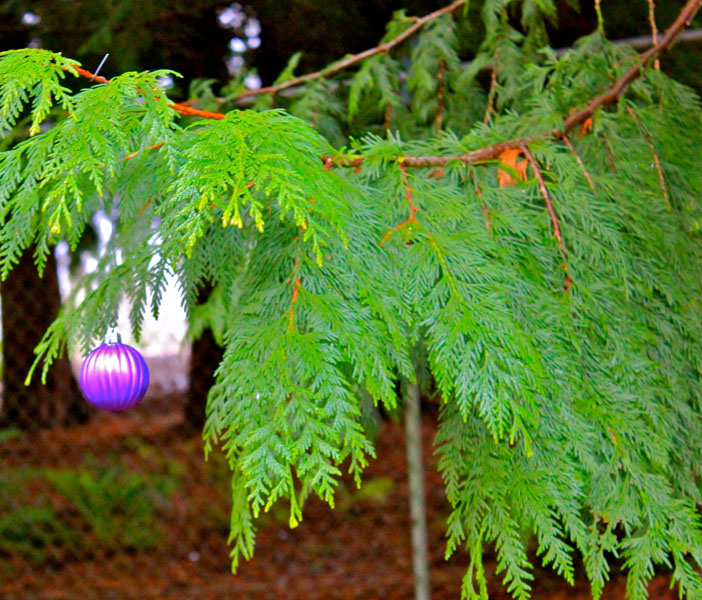
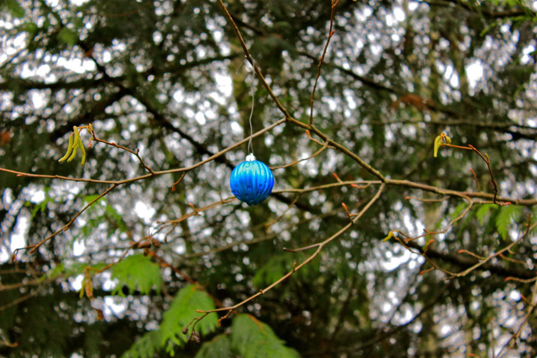
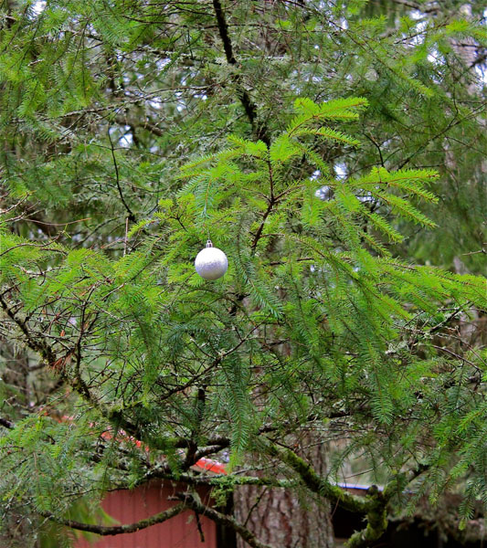
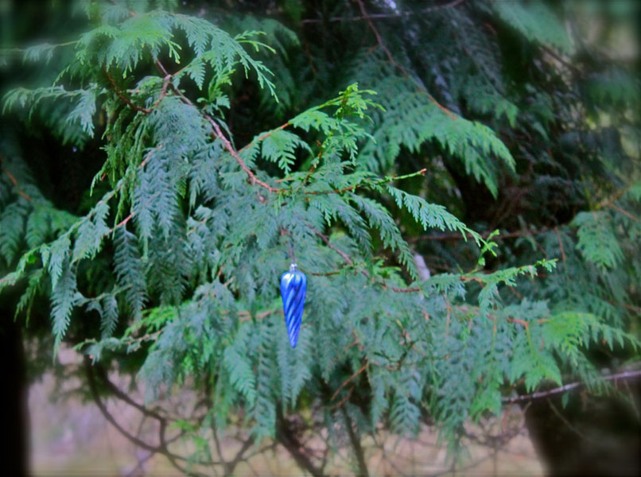
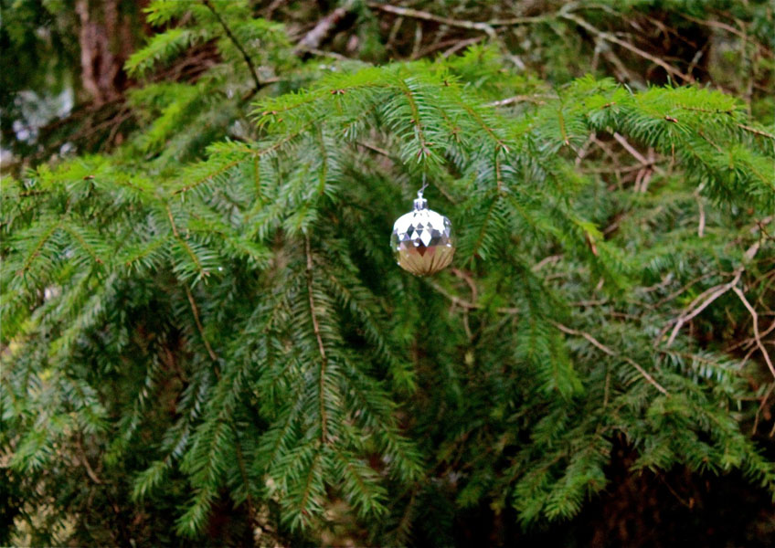
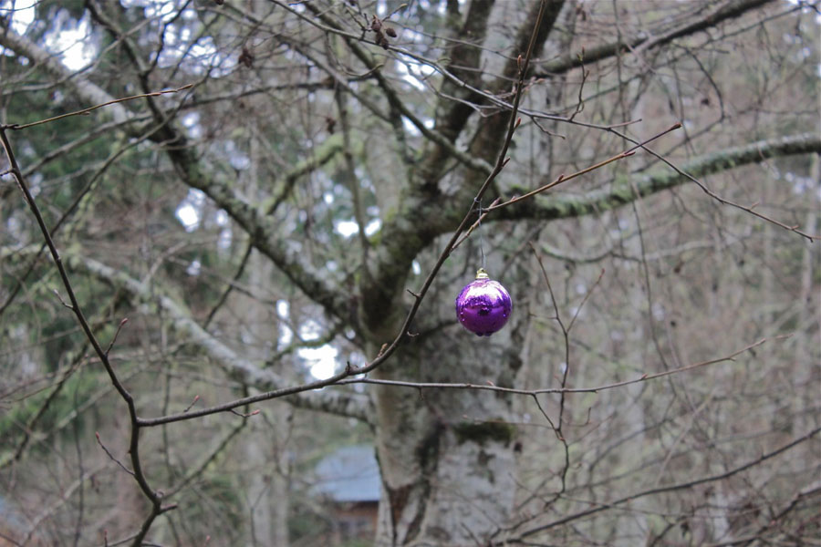
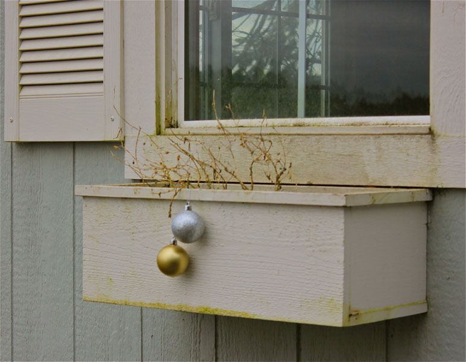
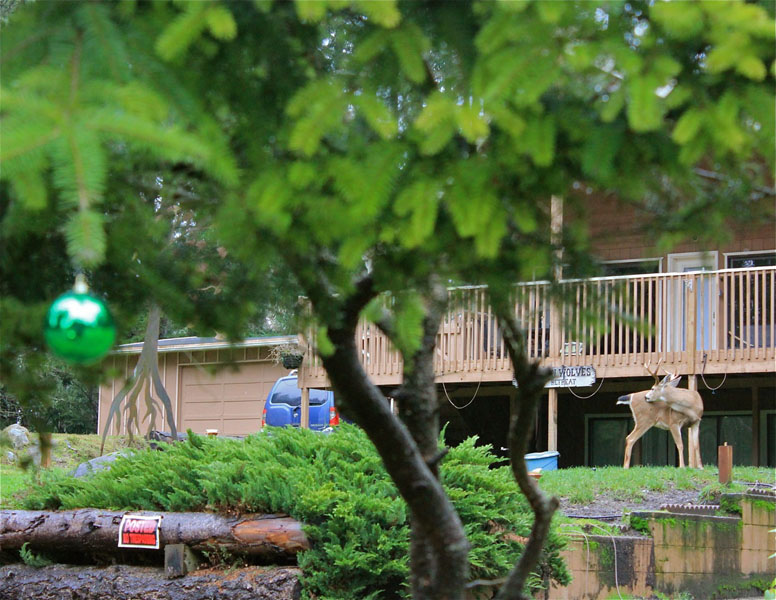

|
We're having a ball on Herron Island. Christmas 2014 Photos by Alice Nelson (scroll down) (Sing to the tune of Jingle Bells) Crossing the watery channel on the cute little red fer-ry we drive the muddy roads laughing and making merry. When suddenly we see little Christmas balls here and there purple, silver and gold why, they're simply everywhere! They dangle in plain sight swinging on a leafless branch or tucked among giant firs they seem to spin and dance. Who did this, we all ask no one seems to know heartwarming was this act now all we need is snow! ohhhhhh.... jingle balls, jingle balls jingle all the way don't let the big winds blow your Christmas spirit away!!!         |